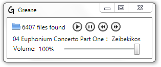

Grease
Grease is a simple application that aims to do one thing well: play random songs from your music library. The idea is simple, yet so many music players get it wrong. Give Grease a directory, and it will recursively walk through it, making a note of any music files it is capable of playing (*.mp3, *.m4a). When you press "Play" it will randomly pick from that list and go at it.
To make things even simpler, there are a few keyboard shortcuts it implements:
- [space] will pause and start the music
- [right arrow] will skip to the next song
- [left arrow] will go back to the last song
- [up arrow] will increase the volume
- [down arrow] will decrease the volume
The idea is to get rid of the bloat. It doesn't play songs in order. It won't manage your library. It won't play a song on demand. Grease does none of those things and it never will.
Feedback?
I can be reached on twitter for any questions or comments.